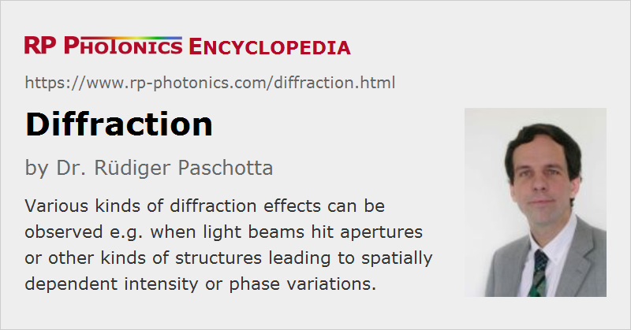

Diffraction
Definition: wave phenomena which occur when light waves hit some structure with variable transmission or phase changes
German: Beugung
How to cite the article; suggest additional literature
Author: Dr. Rüdiger Paschotta
Diffraction is a general term for phenomena which can occur when light waves (or other waves) encounters certain structures. Some typical examples for diffraction effects are discussed in the following sections.
Although in everyday life one rarely encounters substantial diffraction effects with light, such effects are very common in optics and laser technology. In fact, the operation principles of various optical devices are essentially based on diffraction (→ diffractive optics). Diffraction also plays a crucial role in many other devices, such as optical resonators and fibers.
Diffraction at a Single Slit
A common situation is that a narrow optical slit is uniformly illuminated with spatially coherent radiation from a monochromatic laser. Behind the slit, one can observe a diffraction pattern (see Figure 1) with the following features:
- For each wavelength, there is a main maximum in the middle, and they are much weaker side maxima at larger angles.
- For longer wavelengths, the central peak is broader, and the side peaks appear at larger angles.
For a given wavelength, the first minimum of the intensity occurs where the phase difference of contributions from the two edges of the slit reaches 2π. The intensity profiles can be described with sinc2 functions.
Diffraction at a Double Slit
In his famous double-slit experiment of 1803, Thomas Young used two closely spaced narrow optical slits. As he had no laser, he had to achieve spatially coherent illumination of the two slits by using a third narrow slit before them.
Figure 2 shows a calculated intensity profile for one particular wavelength. The first installation arises from the interference of field contributions from the two different slits. The intensity profile is further slowly modulated with a function determined by the finite width of each slit.
Figure 3 shows with a color scale the interference patterns for different wavelengths. The patterns for longer wavelength involve correspondingly larger diffraction angles.
Diffraction at Circular Apertures
If a light beam (for example a laser beam) encounters some aperture which transmits the light in some regions and blocks it otherwise, the immediate effect on the transmitted light is only the corresponding truncation of the intensity profile. Only after some distance behind the aperture, characteristic diffraction effects can be observed.
Figure 4 shows a simulated example, where an originally Gaussian beam has been truncated at a centered circular hard aperture. During the further propagation in air, the intensity profile develops a complicated structure due to diffraction. For a soft aperture (Figure 5), causing a smooth intensity drop at the edge, the diffraction pattern is smoother.
Such diffraction effects can be well understood and calculated based on Fourier optics. The hard aperture introduces high optical frequencies, corresponding to rapid spatial changes of intensity.
Such effects can also occur, for example, when trying to force a laser into single transverse mode operation (for optimum beam quality) by inserting a hard aperture into the laser resonator. Although such an aperture can provide substantially higher round-trip losses for higher-order resonator modes, compared with those for the fundamental mode, it also introduces diffraction effects. Therefore, the method often does not work that well.
The angular resolution of many optical instruments such as telescopes is also limited due to diffraction e.g. at the input aperture. That resolution limit can be estimated to be roughly the wavelength divided by the aperture diameter.
Apertures are not always circular. Figures 6 and 7 show an example case, where a laser beam is truncated with a blade.
Most lasers and laser optics are designed such that there are only negligibly weak diffraction effects due to hard apertures. This implies that all laser mirrors, for example, must be so large that essentially the whole beam profile can be reflected.
Note that the diffraction effects are intrinsically dependent on the optical wavelength. For polychromatic beams, the resulting spatial patterns can substantially differ between different wavelength components. Therefore, it is possible that one observes colors for a white input beam, for example. The classical case is that of a diffraction grating, which is discussed further below.
Divergence of Laser Beams
Even without any aperture, a laser beam always exhibits some amount of diffraction according to its transverse spatial limitation. For Gaussian beams, the shape of the intensity profile is preserved, i.e., it stays Gaussian; only the beam radius gradually increases. This property of preserved intensity profile shapes also applies for other kinds of free-space modes, e.g. to Hermite–Gaussian modes. In general, however, diffraction leads to changes of the shape of the intensity profile, as can be seen e.g. in Figure 1.
Laser beams are often diffraction-limited, i.e., their expansion during propagation is not stronger than caused by diffraction alone.
Strong diffraction effects occur for light with long wavelengths. For example, difference frequency generation of long-wavelength beams can be severely limited in performance by diffraction of the generated beam, which limits the interaction length or enforce weaker beam focusing.
Diffraction and Resonator or Waveguide Modes
Diffraction effects also play a crucial role for the formation of certain kinds of modes. For example, there are modes of optical fibers, for which (by definition) the intensity profile remains constant during propagation. Such modes are formed by two counteracting effects:
- Diffraction alone would tend to widen a beam, as discussed above.
- Waveguide effects from a refractive index profile of the fiber provide a kind of focusing.
For the fiber modes, these two effects exactly balance each other. Similarly, resonator modes exhibit a balance of diffraction and focusing effects, only that the latter are usually lumped rather than distributed in the resonator.
Good stability of such modes is achieved when the two counteracting effects are relatively strong, so that any additional effects (e.g. imperfections of a fiber structure, bending of a fiber or misalignment of a resonator element) have comparatively weak effects. Poor stability arises in situations where both effects are weak – for example, in a laser resonator where the Rayleigh length of the beam is much larger than the resonator length. Such situations can arise e.g. when developing Q-switched lasers with large mode radii and short laser resonators.
Diffraction at Periodic and Non-periodic Structures

Diffraction effects can also occur when a light beam encounters a structure which causes spatially periodic changes of the optical intensity (via a variable absorbance) or of the optical phase (e.g. via a variable refractive index or a height profile). Such structures are called diffraction gratings, and the phenomenon is called Bragg diffraction. If a grating exhibits a large number of oscillations within the beam profile, there can be multiple diffracted output beams (see Figure 8), each of which has a similar spatial shape as the input beam. The beam direction of the output beams (except that of the zero-order beam) are dependent on the optical wavelength. That effect is exploited e.g. in grating spectrometers.
Diffraction can also be caused by refractive index modulations in some volume of a medium. For example, there are volume Bragg gratings which can be used as wavelength-dependent reflectors. Also, Bragg diffraction is possible based on sound waves in a medium; this is exploited in acousto-optic modulators.
Diffraction effects can also occur in reflection. In fact, most diffraction gratings are reflective elements.
Of course, diffraction effects also occur at non-periodic structures. For example, the phenomenon of laser speckle occurs when a laser beam is scattered on a rough surface, which in effect causes a complicated phase modulation pattern on the beam. Very noticeable speckle effects can be observed with quasi-monochromatic light as obtained from lasers. This is not the case for broadband (temporally incoherent) light, because the obtained patterns have a strong wavelength dependence, such that the averaging of intensities over some wavelength range effectively washes out such patterns.
Diffractive Optics
There are various other kinds of optical elements which exploit diffraction effects. For example, there are diffractive beam splitters with multiple outputs, and similar devices are used for coherent beam combining. For more details, see the article on diffractive optics.
Diffraction and Interference
Diffraction effects can be explained based on the interference of different contributions of a field profile to the resulting fields at distant locations (Huygens–Fresnel principle). There is actually no clear boundary between diffraction and interference. For example, the transmission of light through a narrow slit (aperture) is usually described in terms of diffraction, while phenomena behind a double slit are called interference phenomena. However, the basic principle of interference can be applied to both cases.
Different Regimes of Diffraction
Different regimes of diffraction are distinguished, which can be treated with different mathematical methods. Fraunhofer diffraction is relevant when considering the far field, i.e., diffraction patterns far away from the refracting structure; this regime is characterized by values of the Fresnel number well below 1. On the other hand, the concept of Fresnel diffraction with large Fresnel numbers can be applied to cases where the near field is relevant.
Diffraction-limited Performance of Optical Instruments
The performance of various kinds of optical instruments such as microscopes is essentially limited by diffraction effects. Essentially, the limited transverse size of the entrance aperture or of internal elements cause diffraction effects which set a minimum spot size of the so-called point spread function. Therefore, optical microscopes (including laser microscopes) are usually limited in resolution to the order of half the optical wavelength. There are few exceptions to that limitation, for example near field microscopes (using an optical tip of sub-wavelength size for scanning objects) or certain kinds of fluorescence microscopy (STED).
Similar performance limitations apply to optical telescopes. Limiting diffraction effects (for optimum angular resolution) requires the use of large optical apertures.
Questions and Comments from Users
Here you can submit questions and comments. As far as they get accepted by the author, they will appear above this paragraph together with the author’s answer. The author will decide on acceptance based on certain criteria. Essentially, the issue must be of sufficiently broad interest.
Please do not enter personal data here; we would otherwise delete it soon. (See also our privacy declaration.) If you wish to receive personal feedback or consultancy from the author, please contact him e.g. via e-mail.
By submitting the information, you give your consent to the potential publication of your inputs on our website according to our rules. (If you later retract your consent, we will delete those inputs.) As your inputs are first reviewed by the author, they may be published with some delay.
See also: diffraction gratings, diffraction-limited beams, resonator modes, modes, laser speckle, Fourier optics, near field and far field
and other articles in the category general optics
|  |
If you like this page, please share the link with your friends and colleagues, e.g. via social media:
These sharing buttons are implemented in a privacy-friendly way!